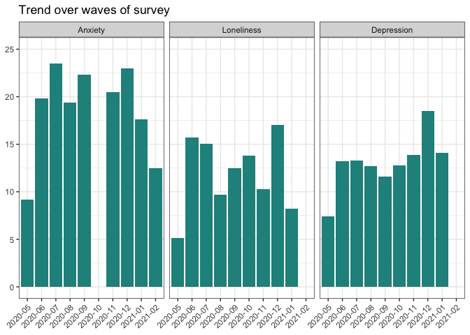
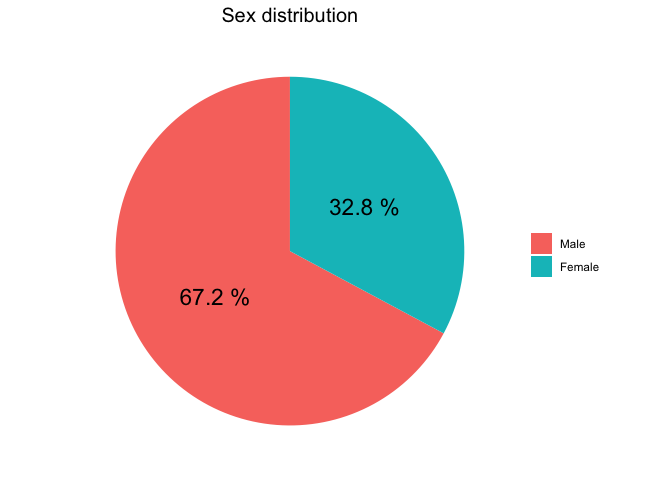

The goal of iCARE is to …
You can install the released version of iCARE from CRAN with:
install.packages("iCARE")This is a basic example which shows you how to solve a common problem:
library(iCARE)
library(tidyverse)
#> ── Attaching packages ─────────────────────────────────────── tidyverse 1.3.1 ──
#> ✓ ggplot2 3.3.3 ✓ purrr 0.3.4
#> ✓ tibble 3.1.2 ✓ dplyr 1.0.6
#> ✓ tidyr 1.1.3 ✓ stringr 1.4.0
#> ✓ readr 1.4.0 ✓ forcats 0.5.1
#> ── Conflicts ────────────────────────────────────────── tidyverse_conflicts() ──
#> x dplyr::filter() masks stats::filter()
#> x dplyr::lag() masks stats::lag()
iCARE
#> # A tibble: 1,400 x 239
#> startdate startlanguage sex age_yrs edu concern_sq001
#> <dttm> <chr> <dbl> <dbl> <dbl> <dbl>
#> 1 2020-04-27 19:42:31 en 2 39 NA NA
#> 2 2020-04-30 11:50:06 fr 2 34 4 2
#> 3 2020-04-02 23:17:04 en NA NA NA NA
#> 4 2020-04-09 14:40:06 fr 1 58 2 1
#> 5 2020-04-17 08:10:22 es 2 40 4 1
#> 6 2020-03-30 21:36:57 en NA NA NA NA
#> 7 2020-04-05 22:48:52 en 2 57 NA NA
#> 8 2020-04-02 03:53:16 it 1 22 2 2
#> 9 2020-05-04 18:12:30 en 2 59 4 2
#> 10 2020-04-15 14:36:58 fr 2 61 3 3
#> # … with 1,390 more rows, and 233 more variables: concern_sq002 <dbl>,
#> # concern_sq004 <dbl>, concern_sq006 <dbl>, impacvd_sq001 <dbl>,
#> # impacvd_sq002 <dbl>, impacvd_sq003 <dbl>, impacvd_sq004 <dbl>,
#> # impacvd_sq023 <lgl>, impacvd_sq006 <dbl>, impacvd_sq011 <dbl>,
#> # impacvd_sq012 <dbl>, impacvd_sq022 <dbl>, impacvd_sq013 <dbl>,
#> # impacvd_sq014 <dbl>, impacvd_sq015 <dbl>, impacvd_sq020 <dbl>,
#> # impacvd_sq021 <dbl>, hebehch_sq001 <dbl>, hebehch_sq002 <dbl>,
#> # hebehch_sq003 <dbl>, hebehch_sq004 <dbl>, hebehch_sq005 <dbl>,
#> # hebehch_sq006 <dbl>, bodweigt <lgl>, qualife <dbl>, trustinf_sq001 <dbl>,
#> # trustinf_sq002 <dbl>, trustinf_sq003 <dbl>, trustinf_sq004 <dbl>,
#> # trustinf_sq005 <dbl>, trustinf_sq006 <dbl>, trustinf_sq007 <dbl>,
#> # trustinf_sq008 <dbl>, trustinf_sq009 <dbl>, tinfoso_sq011 <dbl>,
#> # tinfoso_sq012 <dbl>, tinfoso_sq013 <dbl>, tinfoso_sq014 <dbl>,
#> # tinfoso_sq015 <dbl>, tinfoso_sq016 <dbl>, cvdinf <dbl>, cvdrisk <dbl>,
#> # cvdtest <dbl>, reastest_sq001 <dbl>, reastest_sq002 <dbl>,
#> # reastest_sq003 <dbl>, reastest_sq004 <dbl>, reastest_sq005 <dbl>,
#> # reastest_sq007 <dbl>, reastest_sq006 <dbl>, reastest_other <chr>,
#> # testres <dbl>, govcontr <dbl>, usecontr <dbl>, ifuscont <dbl>,
#> # motcontr_sq001 <dbl>, motcontr_sq002 <dbl>, motcontr_sq003 <dbl>,
#> # motcontr_sq004 <dbl>, stcursch <dbl>, stmeas <dbl>, stimpsch_sq001 <dbl>,
#> # stimpsch_sq002 <dbl>, stimpsch_sq003 <dbl>, stimpsch_sq004 <dbl>,
#> # stimpsch_sq005 <dbl>, stimpsch_sq006 <dbl>, stimpsch_sq007 <dbl>,
#> # stimpsch_sq008 <dbl>, stimpsch_sq009 <dbl>, stcvdsch <dbl>,
#> # stmimp_sq001 <dbl>, stmimp_sq002 <dbl>, stmimp_sq003 <dbl>,
#> # stmimp_sq004 <dbl>, stmimp_sq005 <dbl>, stmimp_sq006 <dbl>,
#> # stmimp_sq007 <dbl>, stmimp_sq008 <dbl>, stmimp_sq009 <dbl>, pacursch <dbl>,
#> # pameas <dbl>, paimpsch_sq001 <dbl>, paimpsch_sq002 <dbl>,
#> # paimpsch_sq003 <dbl>, paimpsch_sq004 <dbl>, pamimp_sq001 <dbl>,
#> # pamimp_sq002 <dbl>, pamimp_sq003 <dbl>, pamimp_sq004 <dbl>, pascwork <dbl>,
#> # hecond_sq001 <dbl>, hecond_sq002 <dbl>, hecond_sq003 <dbl>,
#> # hecond_sq004 <dbl>, hecond_sq005 <dbl>, hecond_sq006 <dbl>,
#> # hecond_sq007 <dbl>, hecond_sq010 <dbl>, hecond_sq008 <dbl>, …
## An example:
plot_time_trend(data = iCARE,
variables = c(impacvd_sq003, impacvd_sq001, impacvd_sq002),
filter_value = 1,
time_variable = month, # test out for month if you wish
var_names = c("impacvd_sq003" = "Depression",
"impacvd_sq001" = "Anxiety",
"impacvd_sq002" = "Loneliness"),
max_value = 25,
title = "Trend over waves of survey",
return = "plot")
#> Warning: Removed 1 rows containing missing values (position_stack).
## Example pie -Ill change the name of the function :)
plot_pie_chart(data = iCARE,
variable = sex,
filter_response=c(1:2), # if you change to c(1:3) you include other
title = "Sex distribution",
labels = c("Male", "Female"),
number_font_size = 6,
return = "plot")
## EXAMPLE
inspect_missing(iCARE)
#> Showing proportion of missing values in descending order above the level of: 0.
#> infoica_other ukterr_other clspcode clsredir
#> 1.00 1.00 1.00 1.00
#> stcvdsch pregweek pregconc ukterr
#> 1.00 1.00 1.00 0.99
#> ircounty bodweigt punemins impacvd_sq023
#> 0.99 0.99 0.99 0.99
#> stimpsch_sq001 stimpsch_sq002 stimpsch_sq003 stimpsch_sq004
#> 0.98 0.98 0.98 0.98
#> stimpsch_sq005 stimpsch_sq006 stimpsch_sq007 stimpsch_sq008
#> 0.98 0.98 0.98 0.98
#> stimpsch_sq009 pamimp_sq001 pamimp_sq002 pamimp_sq003
#> 0.98 0.98 0.98 0.98
#> pamimp_sq004 jobdes_other reastest_other stmimp_sq001
#> 0.98 0.97 0.96 0.96
#> stmimp_sq002 stmimp_sq003 stmimp_sq004 stmimp_sq005
#> 0.96 0.96 0.96 0.96
#> stmimp_sq006 stmimp_sq007 stmimp_sq008 stmimp_sq009
#> 0.96 0.96 0.96 0.96
#> paimpsch_sq001 paimpsch_sq002 paimpsch_sq003 paimpsch_sq004
#> 0.96 0.96 0.96 0.96
#> pascwork workhome stcursch stmeas
#> 0.94 0.94 0.94 0.94
#> pacursch pameas liveinf cunemins
#> 0.94 0.94 0.90 0.90
#> infoica_sq001 infoica_sq002 infoica_sq003 infoica_sq004
#> 0.89 0.89 0.89 0.89
#> infoica_sq005 infoica_sq006 infoica_sq007 infoica_sq008
#> 0.89 0.89 0.89 0.89
#> infoica_sq009 infoica_sq010 infoica_sq011 infoica_sq012
#> 0.89 0.89 0.89 0.89
#> hcworker reastest_sq007 qc_adm_region homeeasy
#> 0.88 0.88 0.87 0.87
#> ifuscont testres can_adm_city reastest_sq001
#> 0.86 0.85 0.85 0.83
#> reastest_sq002 reastest_sq003 reastest_sq004 reastest_sq005
#> 0.83 0.83 0.83 0.83
#> reastest_sq006 canprov impacvd_sq016 tgovmeas_sq007
#> 0.83 0.82 0.81 0.80
#> workrem sickl usecontr canada_provinces
#> 0.78 0.78 0.75 0.73
#> motcontr_sq001 motcontr_sq002 motcontr_sq003 motcontr_sq004
#> 0.73 0.73 0.73 0.73
#> hecond_sq011 tinfoso_sq001 tinfoso_sq002 tinfoso_sq003
#> 0.72 0.72 0.72 0.72
#> tinfoso_sq004 tinfoso_sq005 tinfoso_sq006 tinfoso_sq007
#> 0.72 0.72 0.72 0.72
#> tinfoso_sq008 tinfoso_sq009 tinfoso_sq010 impacvd_sq007
#> 0.72 0.72 0.72 0.72
#> impacvd_sq008 impacvd_sq009 impacvd_sq010 impacvd_sq018
#> 0.72 0.72 0.72 0.72
#> impacvd_sq019 concern_sq015 whours hebehch_sq001
#> 0.72 0.71 0.71 0.70
#> hebehch_sq002 hebehch_sq003 hebehch_sq004 hebehch_sq005
#> 0.70 0.70 0.70 0.70
#> hebehch_sq006 tgovmeas_sq005 tgovmeas_sq006 cvdrisk
#> 0.70 0.70 0.70 0.70
#> trustinf_sq008 tinfoso_sq011 tinfoso_sq012 tinfoso_sq013
#> 0.70 0.70 0.70 0.70
#> tinfoso_sq014 tinfoso_sq015 tinfoso_sq016 trustinf_sq002
#> 0.70 0.70 0.70 0.70
#> trustinf_sq004 trustinf_sq005 trustinf_sq007 trustinf_sq009
#> 0.70 0.70 0.70 0.70
#> trustinf_sq001 trustinf_sq003 trustinf_sq006 impacvd_sq022
#> 0.69 0.69 0.69 0.69
#> actfreq_sq006 actfreq_sq012 actfreq_sq016 actfreq_sq018
#> 0.69 0.69 0.69 0.69
#> actfreq_sq019 actfreq_sq024 recgov_sq012 recgov_sq006
#> 0.69 0.68 0.66 0.66
#> recgov_sq016 recgov_sq018 recgov_sq019 recgov_sq024
#> 0.66 0.66 0.66 0.66
#> curemp hebeh_sq001 hebeh_sq002 hebeh_sq003
#> 0.64 0.64 0.64 0.64
#> smok ecig menthe phyhe
#> 0.63 0.63 0.63 0.63
#> concern_sq003 concern_sq005 govcontr hwork
#> 0.62 0.62 0.60 0.59
#> actfreq_sq004 actfreq_sq005 actfreq_sq013 actfreq_sq017
#> 0.58 0.58 0.58 0.58
#> actfreq_sq021 actfreq_sq022 jobdes recgov_sq017
#> 0.58 0.58 0.57 0.54
#> recgov_sq005 recgov_sq013 recgov_sq021 preg
#> 0.54 0.54 0.54 0.54
#> recgov_sq004 recgov_sq022 impacvd_sq005 impacvd_sq017
#> 0.54 0.54 0.52 0.52
#> ethn region medins city
#> 0.47 0.47 0.44 0.44
#> perinf cvdinf hecond_sq010 qualife
#> 0.42 0.42 0.42 0.41
#> impacvd_sq001 impacvd_sq002 impacvd_sq003 impacvd_sq004
#> 0.41 0.41 0.41 0.41
#> impacvd_sq006 impacvd_sq011 impacvd_sq012 impacvd_sq013
#> 0.41 0.41 0.41 0.41
#> impacvd_sq014 impacvd_sq015 impacvd_sq020 impacvd_sq021
#> 0.41 0.41 0.41 0.41
#> employstat actfreq_sq002 submitdate_part submittime_part
#> 0.39 0.36 0.35 0.35
#> hoinc area cvdtest hecond_sq001
#> 0.34 0.34 0.33 0.33
#> hecond_sq002 hecond_sq003 hecond_sq004 hecond_sq005
#> 0.33 0.33 0.33 0.33
#> hecond_sq006 hecond_sq007 hecond_sq008 hecond_sq009
#> 0.33 0.33 0.33 0.33
#> edu recgov_sq002 concern_sq004 concern_sq006
#> 0.32 0.31 0.31 0.31
#> concern_sq001 concern_sq002 language emplstat_sq001
#> 0.30 0.30 0.29 0.27
#> emplstat_sq002 emplstat_sq003 emplstat_sq004 emplstat_sq005
#> 0.27 0.27 0.27 0.27
#> emplstat_sq006 emplstat_sq007 emplstat_sq008 recgov_sq008
#> 0.27 0.27 0.27 0.19
#> recgov_sq09 recgov_sq007 recgov_sq001 recgov_sq003
#> 0.19 0.19 0.19 0.19
#> age_yrs age_gp age_gpr age_gpk
#> 0.15 0.15 0.15 0.15
#> sex country_trl country_iso
#> 0.14 0.13 0.13
## if you want it filtered eg for wave 8
inspect_missing(iCARE,
filter_var = "wave",
filter_value = 8)
#> Showing proportion of missing values in descending order above the level of: 0.
#> infoica_other ukterr_other clspcode clsredir
#> 1.00 1.00 1.00 1.00
#> stcvdsch pregweek pregconc ukterr
#> 1.00 1.00 1.00 0.99
#> ircounty bodweigt punemins impacvd_sq023
#> 0.99 0.99 0.99 0.99
#> stimpsch_sq001 stimpsch_sq002 stimpsch_sq003 stimpsch_sq004
#> 0.98 0.98 0.98 0.98
#> stimpsch_sq005 stimpsch_sq006 stimpsch_sq007 stimpsch_sq008
#> 0.98 0.98 0.98 0.98
#> stimpsch_sq009 pamimp_sq001 pamimp_sq002 pamimp_sq003
#> 0.98 0.98 0.98 0.98
#> pamimp_sq004 jobdes_other reastest_other stmimp_sq001
#> 0.98 0.97 0.96 0.96
#> stmimp_sq002 stmimp_sq003 stmimp_sq004 stmimp_sq005
#> 0.96 0.96 0.96 0.96
#> stmimp_sq006 stmimp_sq007 stmimp_sq008 stmimp_sq009
#> 0.96 0.96 0.96 0.96
#> paimpsch_sq001 paimpsch_sq002 paimpsch_sq003 paimpsch_sq004
#> 0.96 0.96 0.96 0.96
#> pascwork workhome stcursch stmeas
#> 0.94 0.94 0.94 0.94
#> pacursch pameas liveinf cunemins
#> 0.94 0.94 0.90 0.90
#> infoica_sq001 infoica_sq002 infoica_sq003 infoica_sq004
#> 0.89 0.89 0.89 0.89
#> infoica_sq005 infoica_sq006 infoica_sq007 infoica_sq008
#> 0.89 0.89 0.89 0.89
#> infoica_sq009 infoica_sq010 infoica_sq011 infoica_sq012
#> 0.89 0.89 0.89 0.89
#> hcworker reastest_sq007 qc_adm_region homeeasy
#> 0.88 0.88 0.87 0.87
#> ifuscont testres can_adm_city reastest_sq001
#> 0.86 0.85 0.85 0.83
#> reastest_sq002 reastest_sq003 reastest_sq004 reastest_sq005
#> 0.83 0.83 0.83 0.83
#> reastest_sq006 canprov impacvd_sq016 tgovmeas_sq007
#> 0.83 0.82 0.81 0.80
#> workrem sickl usecontr canada_provinces
#> 0.78 0.78 0.75 0.73
#> motcontr_sq001 motcontr_sq002 motcontr_sq003 motcontr_sq004
#> 0.73 0.73 0.73 0.73
#> hecond_sq011 tinfoso_sq001 tinfoso_sq002 tinfoso_sq003
#> 0.72 0.72 0.72 0.72
#> tinfoso_sq004 tinfoso_sq005 tinfoso_sq006 tinfoso_sq007
#> 0.72 0.72 0.72 0.72
#> tinfoso_sq008 tinfoso_sq009 tinfoso_sq010 impacvd_sq007
#> 0.72 0.72 0.72 0.72
#> impacvd_sq008 impacvd_sq009 impacvd_sq010 impacvd_sq018
#> 0.72 0.72 0.72 0.72
#> impacvd_sq019 concern_sq015 whours hebehch_sq001
#> 0.72 0.71 0.71 0.70
#> hebehch_sq002 hebehch_sq003 hebehch_sq004 hebehch_sq005
#> 0.70 0.70 0.70 0.70
#> hebehch_sq006 tgovmeas_sq005 tgovmeas_sq006 cvdrisk
#> 0.70 0.70 0.70 0.70
#> trustinf_sq008 tinfoso_sq011 tinfoso_sq012 tinfoso_sq013
#> 0.70 0.70 0.70 0.70
#> tinfoso_sq014 tinfoso_sq015 tinfoso_sq016 trustinf_sq002
#> 0.70 0.70 0.70 0.70
#> trustinf_sq004 trustinf_sq005 trustinf_sq007 trustinf_sq009
#> 0.70 0.70 0.70 0.70
#> trustinf_sq001 trustinf_sq003 trustinf_sq006 impacvd_sq022
#> 0.69 0.69 0.69 0.69
#> actfreq_sq006 actfreq_sq012 actfreq_sq016 actfreq_sq018
#> 0.69 0.69 0.69 0.69
#> actfreq_sq019 actfreq_sq024 recgov_sq012 recgov_sq006
#> 0.69 0.68 0.66 0.66
#> recgov_sq016 recgov_sq018 recgov_sq019 recgov_sq024
#> 0.66 0.66 0.66 0.66
#> curemp hebeh_sq001 hebeh_sq002 hebeh_sq003
#> 0.64 0.64 0.64 0.64
#> smok ecig menthe phyhe
#> 0.63 0.63 0.63 0.63
#> concern_sq003 concern_sq005 govcontr hwork
#> 0.62 0.62 0.60 0.59
#> actfreq_sq004 actfreq_sq005 actfreq_sq013 actfreq_sq017
#> 0.58 0.58 0.58 0.58
#> actfreq_sq021 actfreq_sq022 jobdes recgov_sq017
#> 0.58 0.58 0.57 0.54
#> recgov_sq005 recgov_sq013 recgov_sq021 preg
#> 0.54 0.54 0.54 0.54
#> recgov_sq004 recgov_sq022 impacvd_sq005 impacvd_sq017
#> 0.54 0.54 0.52 0.52
#> ethn region medins city
#> 0.47 0.47 0.44 0.44
#> perinf cvdinf hecond_sq010 qualife
#> 0.42 0.42 0.42 0.41
#> impacvd_sq001 impacvd_sq002 impacvd_sq003 impacvd_sq004
#> 0.41 0.41 0.41 0.41
#> impacvd_sq006 impacvd_sq011 impacvd_sq012 impacvd_sq013
#> 0.41 0.41 0.41 0.41
#> impacvd_sq014 impacvd_sq015 impacvd_sq020 impacvd_sq021
#> 0.41 0.41 0.41 0.41
#> employstat actfreq_sq002 submitdate_part submittime_part
#> 0.39 0.36 0.35 0.35
#> hoinc area cvdtest hecond_sq001
#> 0.34 0.34 0.33 0.33
#> hecond_sq002 hecond_sq003 hecond_sq004 hecond_sq005
#> 0.33 0.33 0.33 0.33
#> hecond_sq006 hecond_sq007 hecond_sq008 hecond_sq009
#> 0.33 0.33 0.33 0.33
#> edu recgov_sq002 concern_sq004 concern_sq006
#> 0.32 0.31 0.31 0.31
#> concern_sq001 concern_sq002 language emplstat_sq001
#> 0.30 0.30 0.29 0.27
#> emplstat_sq002 emplstat_sq003 emplstat_sq004 emplstat_sq005
#> 0.27 0.27 0.27 0.27
#> emplstat_sq006 emplstat_sq007 emplstat_sq008 recgov_sq008
#> 0.27 0.27 0.27 0.19
#> recgov_sq09 recgov_sq007 recgov_sq001 recgov_sq003
#> 0.19 0.19 0.19 0.19
#> age_yrs age_gp age_gpr age_gpk
#> 0.15 0.15 0.15 0.15
#> sex country_trl country_iso
#> 0.14 0.13 0.13